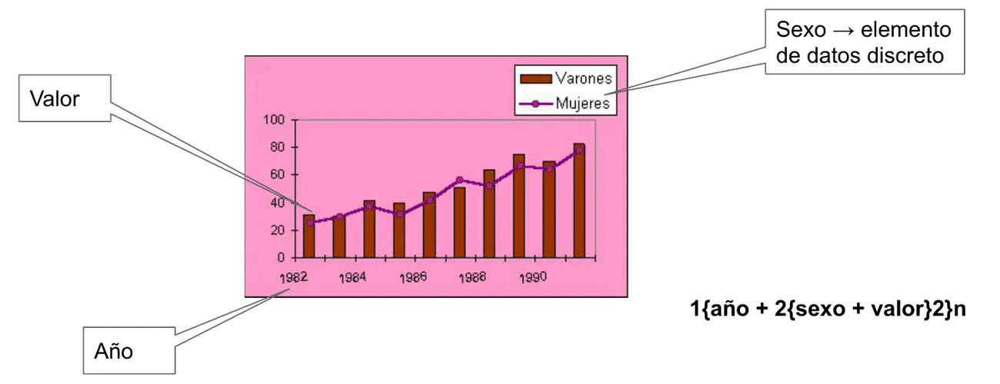
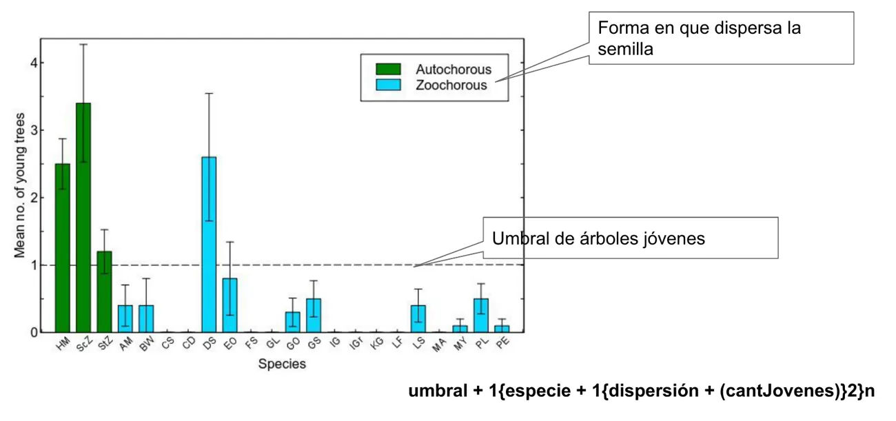
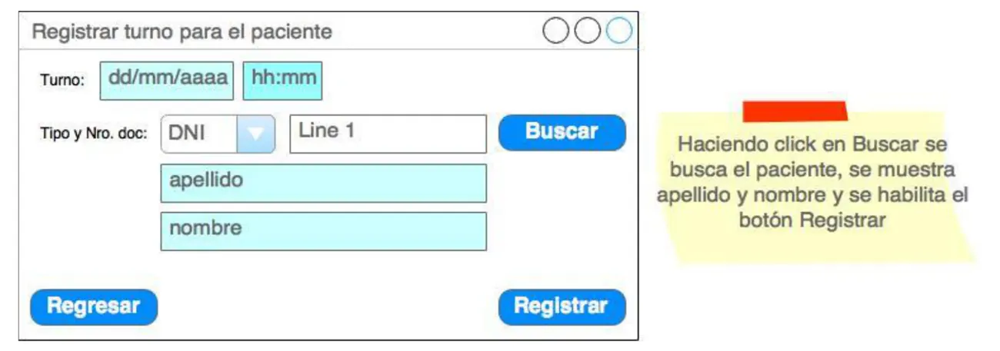
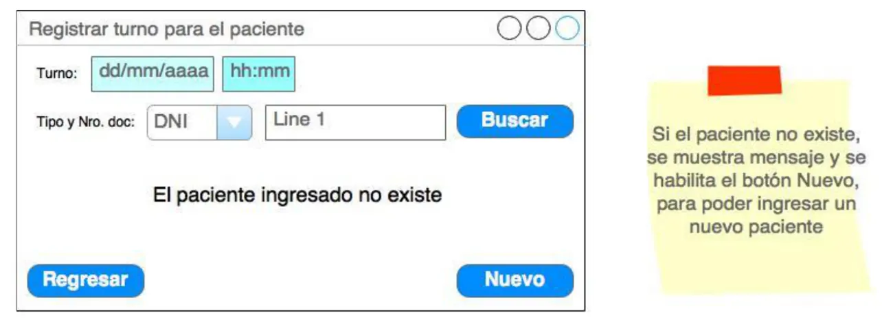
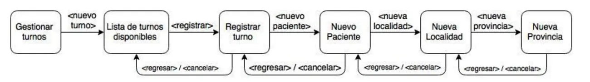

El Santo Resumen
Análisis y Diseño de Datos e Información
Ingeniería en Sistemas, UTN
Qué tiene
De dónde sale
Resumen armado a partir del material del Drive de UTN: presentación de la cátedra 2026, clases de teoría, prácticas y rúbricas del trabajo práctico. En el Drive no hay exámenes. Si el programa cambió, manda la cátedra.
Los quiz, los ejercicios de examen y las figuras que se mueven están en la web.
Análisis y Diseño de Datos e Información
Para entender
La materia enseña a escribir con precisión qué entra y qué sale de un sistema, y a usar eso para dibujar pantallas, probarlas y ayudar al usuario.
Resumen no juzgado. Todavía nadie evaluó si alcanza para estudiar solo con esto.
En el Drive no hay exámenes
No hay ningún final ni parcial, de ningún año. Este resumen sale de la presentación de la cátedra de 2026, las seis clases de teoría, las prácticas, el enunciado del trabajo práctico y sus rúbricas. Por eso acá nunca vas a leer «se tomó». Si en tu comisión circula un final, te dice cómo preguntan mejor que cualquier resumen.
La idea general
Un sistema de información recibe datos, los procesa y entrega información para que alguien decida. El trabajo del analista empieza por definir qué entra y qué sale.
Esa definición se escribe en un diccionario de datos, con una notación formal. Casi todo lo demás de la materia usa ese diccionario o lo alimenta.
En criollo
Pensá en un formulario para sacar turno. El diccionario de datos dice qué campos tiene, cuáles son opcionales, qué valores admite cada uno y qué mensaje vuelve. Con eso podés dibujar la pantalla y pensar qué pasa si alguien escribe cualquier cosa.
El recorrido
| Clase | De qué se trata | Qué te llevás |
|---|---|---|
| 1. Dato e información | Dato, proceso, información, flujos, elementos y estructuras | La notación del diccionario |
| 2. Definición de datos de un sistema | Cómo leer los pasos de un caso de uso | Flujos sacados de un caso de uso y un modelo de dominio validado |
| 3. Ingeniería reversa | Mirar pantallas, reportes y gráficos ya hechos | Un diccionario sin tener la documentación |
| 4. Bosquejos y navegabilidad | Interface de usuario, artefactos y roles | Bosquejos y esquema de navegabilidad |
| 5. Depurando las definiciones | Redundancia, contexto, máscaras y pruebas | Tabla de depuración, clases de equivalencia y casos de prueba |
| 6. Manual de usuario | Tipos de ayuda y tipos de usuario | Qué ayuda ofrecerle a quién |
Cómo se conecta
Las piezas se apoyan una en la otra, en este orden:
- Del caso de uso salen los flujos de entrada y de salida.
- Los flujos forman el diccionario de datos, que sirve de punto de partida para los bosquejos.
- Si ya hay una pantalla o un bosquejo, la ingeniería reversa da el camino inverso, de la pantalla al diccionario.
- El diccionario se depura. Se saca lo redundante, se suman datos de contexto y se documentan las máscaras.
- De los datos depurados salen las clases de equivalencia, y de ellas, los casos de prueba.
- Según quién use cada función y con qué frecuencia, se eligen los tipos de ayuda.
El camino completo está en Final y se practica en el TP integrador.
Qué se evalúa y cómo
Salvo que se indique otra cosa, sale de la presentación de la cátedra 2026 (00 - Presentación AyDDeI, diapositivas 4 y 5).
| Instancia | Qué pide |
|---|---|
| Regularidad | Asistencia del 75%. Trabajo práctico integrador con entregables en el campus. Presentación y defensa de los bosquejos de interface. Cada entregable, con nota 6 o más |
| Final, teoría | 10 preguntas en papel, de verdadero o falso o de selección múltiple. Se aprueba con el 60% bien contestadas |
| Final, práctica | Un bosquejo de interface e información de contexto. A partir de eso, diccionario de datos de los flujos de entrada, tabla de depuración de atributos, clases de equivalencia y casos de prueba |
| Promoción | Entrega adicional del trabajo práctico integrador. Es el bosquejo de interface hecho con alguna herramienta de prototipado, a tu elección |
Las fechas de presentación y defensa que da la cátedra para 2026 son la semana del 27 de julio (primer cuatrimestre) y la del 14 de diciembre (segundo cuatrimestre).
Cómo usar este resumen
- Final tiene toda la teoría, en el orden de las clases, y una sección con la práctica del final, paso a paso.
- TP integrador tiene los entregables y lo que pide cada rúbrica.
- Ejercicios tiene las prácticas de la cátedra. Ninguna trae resolución en el Drive, así que no hay una respuesta con la que comparar.
- La Hoja de repaso es para la noche anterior.
La cátedra también tiene videos de aula invertida. El archivo aclara que no reemplazan la teoría, la complementan. Para el mapa de empatía son el único material.
Lo que falta en el material
Tres cosas aparecen nombradas y no están desarrolladas en las clases:
- «Diccionario de datos versus Glosario» figura en el contenido de la clase 1, sin diapositiva.
- La «matriz» de tipos de usuario y tipos de ayuda se nombra en la clase 6, pero en la hoja no hay ninguna matriz.
- El mapa de empatía, que la rúbrica de la defensa pide y solo tiene video.
Preguntalas en clase. Acá no las completamos de memoria.
Análisis y Diseño de Datos e Información
Final
Toda la teoría que entra, en el orden de las clases, y cómo encarar la práctica: diccionario de datos, tabla de depuración, clases de equivalencia y casos de prueba.
Resumen no juzgado. Todavía nadie evaluó si alcanza para estudiar solo con esto.
Cómo viene el examen
Según la presentación de la cátedra 2026 (diapositiva 5), el final tiene dos partes.
- Teoría. 10 preguntas a responder en papel. Cada una puede ser de verdadero o falso o de selección múltiple. Se aprueba con el 60% bien contestadas.
- Práctica. Un enunciado con un bosquejo de interface e información de contexto. A partir de eso se construyen el diccionario de datos de los flujos de entrada, la tabla de depuración de atributos, las clases de equivalencia y los casos de prueba.
Sin finales para comparar
En el Drive no hay ningún final. No sabemos qué temas de teoría se preguntan más ni cómo es un enunciado real. Por eso esta página trae todo y no marca nada como «se toma».
Dato, proceso e información
Definición de dato
Un dato es
- un elemento aislado;
- recabado para un cierto fin;
- que no ha pasado por un proceso que lo interrelacione con otros de manera funcional para el fin previsto.
01 - Dato e información, pág. 3
Definición de información
Información es
- el conjunto de datos, añadidos, procesados y relacionados;
- de manera que pueden dar pauta a la correcta toma de decisiones según el fin previsto.
Importante destacar respecto a la información: interpretación de un conjunto de datos referentes a un tema.
01 - Dato e información, pág. 3
Los datos se transforman en información mediante procesos: analizar, clasificar, ordenar, discriminar y otros (pág. 4).
De datos sueltos a información
Entran estos datos:
4,7,6,2,a, c, e, 8,1,3, b, f, h, 5, g, 10, $Después de analizar, clasificar, ordenar y discriminar, salen tres grupos: los números ordenados, las letras ordenadas y el símbolo aparte.
01 - Dato e información, pág. 4
Errata del apunte
La pág. 4 de «01 - Dato e información» imprime como salida 1, 2, 3, 4, 5, 6, 7, 8, 9, 10 y a, b, c, d, e, f, g, h. La entrada de esa misma hoja no trae ni el 9 ni la d. Acá contamos los grupos sin repetir esas dos listas, porque un proceso no puede sacar lo que no entró.
Definición de sistema de información
Sistema de Información: conjunto de elementos orientados al tratamiento y administración de datos e información, organizados y listos para su uso posterior, generados para cubrir una necesidad o un objetivo.
01 - Dato e información, pág. 5
La cadena completa de la pág. 5 es datos, procesos, información y toma de decisiones. La interpretación es lo que une la información con la decisión.
De dónde vienen los datos
Las fuentes son personas, otros sistemas, organizaciones, publicaciones, máquinas, dispositivos, servicios y la «nube» (pág. 6). Hay que hacer tres cosas con ellas (pág. 7):
| Qué hacer | Cómo |
|---|---|
| Detectarlas | Aplicando técnicas de relevamiento. Entender el negocio. Detectar problemas. Elicitar las necesidades con el nuevo sistema |
| Validarlas | Talleres de requerimientos. Tormenta de ideas. Juego de roles |
| Modelarlas | Identificando las entradas y salidas (flujos de datos de entrada y salida). Identificando cómo están formados esos flujos. Creando un diccionario de datos |
Flujos de entrada y salida
Es lo primero que se define, es decir qué entra y qué sale. La definición mínima de un flujo tiene nombre y composición (01, pág. 8).
El nombre sigue estas reglas:
- Significativo del contenido.
- No atado a la implementación física.
- Antecedido por una letra
eos, para indicar si es entrada o salida. - Opcionalmente, antes de la letra puede ir un número identificador.
- Si tiene más de una palabra, se define una convención y se respeta. Por ejemplo
solicitudInscripcion,solicitud_inscripciónosolicitud-inscripcion.
La composición son elementos de datos (atributos) y estructuras.
Elementos de datos
También se los conoce como atributos, dato primitivo o dato elemental. Son los bloques básicos de todos los demás datos del sistema. La clase los llama «ladrillos». Son aquellos para los cuales no hay una descomposición significativa (01, pág. 9).
Lo que es elemento depende del dominio del sistema en estudio. domicilio puede ser un solo elemento, si no interesa más detalle. O pueden ser varios: calle, número, piso, departamento, localidad, provincia y país.
Su definición mínima es solo el nombre. Tiene que ser significativo de lo que el elemento representa y sigue las mismas consideraciones que el nombre de los flujos (01, pág. 9).
Tipos
| Nombre | Significado |
|---|---|
numérico (num) | Admite valores numéricos enteros o no enteros |
alfanumérico (char) | Admite letras, símbolos y/o números. Es una cadena de caracteres |
booleano (bool) | Sí o no, verdadero o falso |
Dentro de los alfanuméricos y numéricos están los discretos, que contienen un conjunto finito de valores. tipoDocumento puede admitir solo DNI, DU, PASAPORTE, LC y LE. categoria puede admitir solo 1, 3 y 5 (01, pág. 10).
La longitud en caracteres se indica entre paréntesis, después del tipo: char(10). La clase aclara que indicarla puede ser de suma importancia.
En los casos de uso de la cátedra, un elemento discreto se marca con (d) después del nombre, como mensaje(d), y abajo se listan sus valores posibles (Teoría, 04-1-CURS01-SE). La rúbrica del diccionario pide las dos cosas: la marca sola, sin la definición de los valores, no alcanza (La práctica del final).
Estructuras de datos
Una estructura está formada por elementos de datos y/u otras estructuras. Se crean cuando aportan claridad. Agrupan elementos para usarlos en otras estructuras y en flujos (01, pág. 11).
Su definición mínima tiene nombre y composición. El nombre sigue las mismas reglas que el de los flujos y suele llevar un (e) al final, para indicar que es una estructura.
Todo encaja como un árbol (01, pág. 12). Un flujo tiene elementos y estructuras. Una estructura tiene elementos y otras estructuras.
Flujo de datos
├── Elemento de datos
├── Elemento de datos
└── Estructura de datos
├── Elemento de datos
└── Estructura de datos
└── ...Diccionario de datos
Es el repositorio único para todo el proyecto de desarrollo del nuevo sistema. Según la clase (01, pág. 13), el diccionario:
- ayuda a conceptualizar el sistema y la forma en que necesitará trabajar;
- permite validar los requerimientos, documentados con casos de uso;
- da un punto inicial para crear bosquejos de interface de usuario;
- permite determinar el contenido de las clases del modelo de dominio, punto de partida para el diagrama de clases;
- da una notación formal del contenido de los flujos de entrada y salida y de las estructuras.
Notación
De 01, pág. 14:
=indica «está compuesto de» o «está formado por».+significa «y». Permite ir concatenando todos los componentes.a{...}bimplica repetición. Los componentes entre llaves se repiten.apuede ser 0, 1 o un número determinado, si se lo conoce.bpuede ser 1 o un número determinado, si se lo conoce.- Si no se saben los límites, se usa
mparaaynparab. - Ejemplos de la clase:
1{...}7,0{..}8,1{..}n,m{..}n,6{..}n.
[...]implica una situación disyuntiva. Los elementos entre corchetes son mutuamente excluyentes, puede estar presente solo uno, y se separan con|.(...)indica que los componentes entre paréntesis son opcionales.
Los tres ejemplos de la clase
e: datosPersonales = apellido + nombre + tipoDocumento + nroDocumento + domicilio(e) + 0{eMail}n
domicilio(e) = calle + nro + (piso + (depto))
tipoDocumento = char(3); [DNI | DU | PAS | LE | LC]datosPersonaleses un flujo de entrada, por lae:.domicilio(e)es una estructura.pisoes opcional y, si se indica piso,deptotambién es opcional.tipoDocumentoes un elemento alfanumérico de longitud 3. Los corchetes definen los valores posibles de un elemento discreto, porque son mutuamente excluyentes.
01 - Dato e información, pág. 15
Información adicional en la etapa de análisis
Además del nombre y la composición, el diccionario puede guardar esto (01, págs. 16 y 17):
| Para | Se puede sumar |
|---|---|
| Flujos | Identificador único. Alias. Descripción general. Actor origen, si es entrada. Actor destino, si es salida. Volumen por unidad de tiempo o frecuencia. Comentarios |
| Estructuras | Descripción general. Alias. Comentarios |
| Elementos | Identificador único. Tipo. Longitud. Alias. Descripción general. Si es discreto o no. Para los numéricos no discretos, límite inferior y superior. Formato de entrada. Formato de salida. Criterios de validación. Comentarios |
Del caso de uso al diccionario
Hay casos de uso breves, informales y completos o detallados (02, pág. 3). Los flujos salen de los pasos de un caso de uso con alcance de sistemas, que tienen esta sintaxis (02, pág. 4):
Adyacencia-negocio-anterior. Paso-caso-de-uso. Adyacencia-negocio-posteriorAdyacencias de negocio. Incorporan una pequeña porción de la descripción del negocio.
- La inmediatamente anterior al paso de sistema usa «Cuando» y el verbo en pasado.
- La inmediatamente posterior usa «Luego» y el verbo en futuro.
- Sirven para poner en contexto la utilidad del paso.
- No tienen referencia directa a flujos, pero ayudan a entender el contenido.
Paso del caso de uso (02, pág. 5).
- Las oraciones deben poseer sujeto. No se usa sujeto tácito.
- Se tiene que identificar con claridad qué hace el actor y qué hace el sistema.
- Generalmente son 2 oraciones separadas por punto y seguido.
- La primera dice qué ingresa el actor al sistema. La segunda da la respuesta del sistema, que puede ser interna o externa.
La clase marca a estas dos oraciones como la fuente de los flujos de entrada y salida.
El préstamo de libros
Dominio: biblioteca, préstamo de libros. Meta: llevarse libros para leer. Actores: Socio (primario) y Bibliotecario (otros).
Cuando el Socio eligió los libros, el Bibliotecario ingresa los datos del préstamo. El Sistema valida que el Socio no adeude cuotas ni esté inhabilitado, registra el préstamo y emite un comprobante. Luego, el Bibliotecario entregará el comprobante junto con los libros al Socio.
| Parte del paso | Qué es |
|---|---|
| El Bibliotecario ingresa los datos del préstamo | Lo que ingresa el actor. Es el flujo de entrada, con todos los atributos para validar, registrar y emitir el comprobante |
| Valida que el Socio no adeude cuotas ni esté inhabilitado | Respuesta externa, en caso de que la validación falle |
| Registra el préstamo | Respuesta interna |
| Emite un comprobante | Respuesta externa |
El flujo de salida está compuesto por el comprobante o por los mensajes de error si las validaciones fallan. Se puede modelar en un mismo flujo o en dos separados.
02 - Definición de datos e información de un sistema, págs. 6 a 8
Errata del apunte
La pág. 7 de «02 - Definición de datos e información de un sistema» rotula las dos adyacencias como «precondición de negocio», también la que empieza con «Luego». Esa parte ocurre después del paso, y la pág. 4 la llama adyacencia posterior. Quedate con el nombre de la pág. 4.
Cómo queda escrito en un caso de uso
La cátedra trae un caso completo de un consultorio odontológico, con su diccionario abajo. Fijate que el número del paso va delante de cada flujo.
Los cuatro documentos del ejemplo (Teoría, 04-1 a 04-4) usan la misma plantilla:
- Código y nombre del CU, como
CURS01 - Registrar turno para paciente. - Clasificación: nivel, estructura, alcance, caja, instanciación e interacción. CURS01 es de nivel Resumen. CUU01 y CUU02 son de nivel Usuario. Los cuatro tienen alcance Sistema, caja Negra, instanciación Real e interacción Semántica.
- Meta y actores, el primario y los otros.
- Precondiciones de sistema, como «El calendario de turnos disponibles se encuentra registrado».
- Disparador, como «Paciente llama para pedir un turno».
- Camino básico, con los pasos numerados.
- Caminos alternativos, numerados a partir del paso del que salen:
1.a,1.a.1,2.a.1.a.1. - Postcondiciones de sistema: éxito, fracaso y éxito alternativo.
- Reglas de negocio, indicando a qué paso corresponde cada una.
- Diccionario de datos de entradas y salidas.
Diccionario del caso resumen sin estructurar
El caso CURS01 sin estructurar tiene todo en un solo caso de uso. Su diccionario numera cada flujo con su paso, también los de los caminos alternativos:
1-e: fechaDisponibles = fecha
1-s: turnosDisponibles = fecha + 1{hora}n
1.a.1-s: sinTurnos = mensaje(d) + fecha
2-e: nuevoTurno = fecha + hora + tipoDoc + nroDoc
2.a-s: esNuevo = mensaje(d)
2.a.1-e: nuevoPaciente = tipoDoc + nroDoc + apellido + nombres + localidad + teléfonoFijo + teléfonoMóvil + (correoElectrónico)
2.a.1.a.1-e: nuevaLocalidad = localidad + provincia
2.a.1.a.1.a.1-e: nuevaProvincia = provincia
2.b.1-s: constancia = mensaje(d) + correoElectrónico
mensaje(d) = "No hay turnos disponibles para la fecha: ", "El paciente no está registrado", "Se envió constancia al siguiente correo electrónico: "La regla de negocio del paso 2.a.1 dice que del paciente se conoce el correo electrónico «si posee». Por eso correoElectrónico va entre paréntesis, la marca de lo opcional.
Teoría, 04-1-CURS01-SE
Falta el domicilio en nuevoPaciente
La misma regla de negocio del paso 2.a.1 dice que del paciente se conoce su dirección, y el bosquejo de Nuevo paciente (04 - Bosquejos y navegabilidad, pág. 36) tiene el campo Domicilio. El flujo 2.a.1-e: nuevoPaciente de 04-1 no lo trae. Está así en el documento de la cátedra. No lo tomes como modelo de qué dejar afuera.
El mismo caso re-estructurado (04-2) conserva la meta, los actores y las postcondiciones, pero cada paso del camino básico invoca un caso de nivel usuario. El paso 1 invoca CUU01 - Informar turnos disponibles y el paso 2, CUU02 - Registrar turno. Los caminos alternativos y el diccionario pasan a esos dos casos, y por eso sus flujos vuelven a numerarse desde el paso 1.
Diccionario de CUU01 y CUU02
CUU01 - Informar turnos disponibles
1e: fechaSolicitada = fechaTurno
1s: turnosDisponibles = fechaTurno + [mensaje | 1{hora turno}n]
mensaje = "No hay turnos disponibles para la fecha ingresada"
CUU02 - Registrar turno
1e: datosTurno = fechaTurno + horaTurno + tipoDoc + nroDoc
1s: resultadoTurno = mensaje
mensaje = ["El paciente ingresado no existe" | "Se ha registrado el turno exitosamente" | "Se ha registrado el turno exitosamente y enviado correo al paciente"]
tipoDoc = ["DNI" | "LC" | "LE" | "PAS" | "CEL"]Teoría, 04-3-CUU01 y 04-4-CUU02
Compará cómo sale el «no hay turnos». En 04-1 es un flujo aparte, 1.a.1-s: sinTurnos. En CUU01 queda adentro del mismo flujo, con [mensaje | 1{hora turno}n]. Son las dos opciones que da la clase 2 para la respuesta del sistema: un mismo flujo o dos separados.
Hay más de una forma de escribir el flujo
Las clases usan e: y FEN). Los casos de uso usan 1e: y, en otro documento, 1-e:. No encontramos una regla que elija una sola. Lo que sí pide el apunte es definir una convención y respetarla.
Con los valores de un discreto pasa algo parecido. En 04-1, los de mensaje(d) van separados por comas. En CUU02 y en la clase 1, van entre corchetes y separados con |, que es la notación de los elementos mutuamente excluyentes.
Validar el modelo de dominio
Un caso de uso acompañado de un modelo de dominio permite validar su completitud (02, pág. 9).
Cada atributo que ingresa en un flujo de datos de entrada debe:
- ser usado por el sistema en generar la respuesta, ya sea para recuperar información para validar o para una salida, o para realizar cálculos que formarán parte de una salida;
- ser registrado en una clase del modelo de dominio.
Cada atributo que forma parte de un flujo de datos de salida debe:
- ser resultado de un cálculo o transformación como parte de la respuesta;
- provenir de una clase del modelo de dominio.
En criollo
Es un control cruzado. Si un dato entra y nadie lo usa ni lo guarda, ¿para qué lo pedís? Si un dato sale y no se calculó ni está guardado en ningún lado, ¿de dónde lo sacaste?
Ingeniería reversa
Definición de ingeniería reversa
Proceso de descubrir los principios tecnológicos de un dispositivo, objeto o sistema, mediante el análisis de su estructura, funcionamiento y operación.
El propósito es deducir el diseño del dispositivo, objeto o sistema bajo estudio, con nulo o muy poco conocimiento del proceso que permitió construirlo.
03 - Ingeniería reversa, pág. 3
Comenzó a aplicarse en la Segunda Guerra Mundial para obtener ventajas militares, incautando armamento, maquinarias de guerra y aviones.
En el software (03, pág. 4):
- Es el proceso de analizar un sistema para crear una representación del mismo en un alto nivel de abstracción.
- Es «ir hacia atrás» en el ciclo de vida de desarrollo.
- Es un proceso solo de examinación. No se modifica el sistema en estudio.
- Tiene dos escenarios posibles. Se tiene el código fuente, con documentación mala o sin documentación, o no se tiene el código fuente.
En esta materia se aprende una parte: de pantallas y reportes a flujos, estructuras y elementos de datos (pág. 5).
En pantallas de ingreso de datos
Primero se detectan zonas con información estática y dinámica. La estática no se modela en el diccionario, como un menú estático. La dinámica se lee así (03, págs. 6 a 9):
| Lo que ves | Cómo se modela |
|---|---|
| Agrupamiento de información | Estructura de datos potencial |
| Similitudes dentro de los agrupamientos | Factibles de modelar con {...} |
| Botones de opción | Factibles de modelar con [ ... | ... ] |
| Botones de selección múltiple o listas de selección múltiple | Factibles de modelar con {...} |
| Grillas | Factibles de modelar con {...} |
Campos mandatorios, marcados con * | Elementos de datos potenciales |
| Campos no mandatorios | Elementos de datos potenciales, factibles de modelar con (...) |
Para completar el diccionario sirven los manuales de usuario, la ayuda en línea y el símbolo de información.
En reportes
Solo se pueden elicitar elementos de datos, mandatorios u opcionales, y grillas, factibles de ser modeladas con {...} (03, pág. 10).
En gráficos
Los gráficos nacen del procesamiento de los datos para transformarlos en información. Aunque parezcan complicados, modelarlos es sencillo (03, pág. 11).

Los cuatro modelos de la clase:
| Página | Qué muestra | Modelo |
|---|---|---|
| 11 | Valor por año, para varones y mujeres. Sexo es un elemento discreto | 1{año + 2{sexo + valor}2}n |
| 12 | Memoria según pestañas, para 4 navegadores | 1{pestañas + 4{browser + memoria}4}n |
| 13 | Árboles jóvenes por especie, con un umbral | umbral + 1{especie + 1{dispersión + (cantJovenes)}2}n |
| 14 | Ingreso de 3 grupos, en 3 años | 3{top + 3{año + ingreso + delta + %delta}3}3 |

Fijate qué se repite y cuántas veces. La línea de umbral aparece una sola vez, así que queda afuera de las llaves. En el gráfico de árboles hay especies sin barra, y por eso cantJovenes va entre paréntesis.
Interface de usuario
El modelo de casos de uso da los requerimientos funcionales, el qué y no el cómo. Una vez definida la tecnología, se empieza a definir el cómo (04, pág. 3). Los componentes del nuevo sistema son de dos clases:
- Sin interacción con un actor humano: API (Application Programming Interface), una interface que las aplicaciones ofrecen a otras para ser usadas sin intervención de un usuario humano.
- Con interacción con un actor humano: diseño de la interface de usuario.
Definición de interface de usuario (UI)
Todo lo que se diseña en un dispositivo de información con el cual va a interactuar un ser humano (usuario).
Pantallas, teclado, mouse, lápiz óptico, la apariencia del escritorio de un sistema operativo, los caracteres, los mensajes de ayuda y cómo un sistema o aplicación web va a interactuar y responder al usuario.
04 - Bosquejos y navegabilidad, pág. 4
Tipos de interface (págs. 5 a 9): comandos, con menús y formularios, con ventanas, entornos gráficos. La clase deja abierta la pregunta por las futuras.
Buenas prácticas
De 04, pág. 10:
| Práctica | Qué quiere decir |
|---|---|
| Conocer al usuario | Las metas de los usuarios son también nuestras |
| Prestar atención a los patrones | No reinventar la rueda |
| Ser consistentes | Interfaces similares para acciones similares |
| Emplear jerarquía visual | Resaltar la importancia de ciertos componentes con colores y ubicación |
| Proveer retroalimentación | La interfaz tiene que hablarle al usuario |
| Ser indulgente | No importa cuán perfecto sea el diseño, los usuarios nos equivocamos |
| Fortalecer al usuario | Tiene que sentir que aprende al usar la interface y que le es útil |
| Utilizar el idioma del usuario | Respetar el glosario del negocio |
| Mantener la interface simple | Keep it simple |
| Siempre avanzar | El usuario tiene que poder avanzar para cumplir su meta |
Artefactos
De 04, págs. 11 a 14:
| Artefacto | Qué es | Entregable |
|---|---|---|
| Sketch | Dibujo rápido o bosquejo de guía general, sin muchos detalles. Reproduce un concepto, idea o generalidad del proyecto de una manera muy sencilla. Por lo general, a mano con lápiz y borrador, por lo fácil que es plasmar un punto de partida | Una imagen del dibujo, o el dibujo en papel |
| Wireframe | Define qué (los principales grupos de contenido), dónde (la estructura de la información) y cómo (descripción y visualización básica de la interacción). Es la columna vertebral del diseño, con una representación de cada parte importante del producto final | Una imagen |
| Mockup | Representa la estructura de la información, visualiza el contenido y demuestra las funcionalidades básicas de manera estática. Permite revisar la parte visual real. Para el contenido de relleno, la clase sugiere el texto de lipsum | Una imagen |
| Prototipo | Simula la interacción. El usuario experimenta con la interfaz y prueba las principales interacciones de forma similar al producto final | HTML, PPT, animación o formato navegable |
El orden va de menos a más parecido al producto final. Los primeros tres son estáticos. Solo el prototipo se puede usar.
Roles
De 04, pág. 18. Muchas veces los ejerce la misma persona, el analista.
- Analista. Documenta los requerimientos.
- Desarrollador de experiencia de usuario o UX. Define la experiencia del usuario, crea los flujos, sketches y wireframes.
- Diseñador gráfico. Crea la paleta de colores, el logo o identidad y los efectos gráficos. Genera los mockups y prototipos, si corresponde.
Bosquejos de interface
Se trabaja en dos pasos (04, págs. 19 a 25).
1. Determinar los elementos componentes:
- Encabezado y pie.
- Estructuras visuales de información.
- Inicio de sesión. ¿Solo usuario y contraseña, o recursos extra como DNI, PIN, tarjeta de coordenadas o token? ¿Integración con redes sociales?
- Página de inicio (landing page), que se detalla abajo.
- Menú.
- Filtros de información.
Página de inicio. Es la primera página que ve el usuario luego de iniciar sesión.
- Depende de su rol, por privacidad y confidencialidad.
- Muestra información útil y relevante para su trabajo diario, que es la meta primaria.
- Da atajos a funcionalidad adicional, que son las metas complementarias.
2. Distribuir los elementos en la zona de trabajo:
- Encabezado y pie no generan dudas sobre su ubicación.
- Identificación del usuario y cierre de sesión.
- Menús, ¿arriba o a la izquierda?
- Botones de acción, ¿abajo de todo o al costado?
- Sea lo que sea que elijas, lo importante es respetarlo en todas las pantallas.
Hay que tener presentes los estándares actuales según la tecnología, web o móvil nativa (Android, iOS). La clase enlaza las guías de Android Developers, las Human Interface Guidelines de iOS y los estándares de diseño del gobierno de EEUU (pág. 26). En la carpeta Tendencias 2026 hay más enlaces para web y móvil.
Dos pautas más (pág. 27):
- Usá el diccionario de flujos de datos de los casos de uso como punto de partida, si existe.
- Un caso de uso de usuario puede tener más de un wireframe. Son estados de la interface a medida que se avanza en los pasos, con un orden lógico dado por el esquema de navegabilidad.
Dos estados de la misma pantalla
En «Registrar turno para el paciente», las notas al costado explican qué cambia. Buscar muestra apellido y nombre y habilita Registrar. Si el paciente no existe, aparece el mensaje y se habilita Nuevo.


04 - Bosquejos y navegabilidad, págs. 34 y 35
Los otros bosquejos del ejemplo (págs. 32 a 38) dejan anotado el comportamiento con notas al costado, de la misma forma:
- La página de inicio muestra los turnos de hoy y un calendario con el botón «Ver disponibles».
- En la lista de turnos disponibles, el botón «Registrar turno» se habilita cuando se elige un turno.
- En Nuevo paciente, el tipo y número de documento vienen autocompletados de la interface anterior, pudiendo modificarse. Lo mismo pasa con la localidad en Nueva localidad y con la provincia en Nueva provincia.
- El botón «Registrar» se habilita cuando todos los campos obligatorios fueron ingresados.
- Junto a la lista de localidades y a la de provincias hay un botón «Nueva», para dar de alta la que falta. Después de la página de inicio, cada pantalla tiene «Regresar».
Esquema de navegabilidad
También se llaman flujos de interface de usuario, storyboards, diagramas de navegación de ventanas o mapas de contexto-navegación. Modelan las relaciones de alto nivel entre los principales elementos de la interface (04, pág. 15).
- Modela las interacciones que los usuarios tendrán con el sistema, tal como se documentan en los casos de uso.
- Construye un esquema de alto nivel de la interface, derivado del modelo de casos de uso.
- Permite entender cómo se espera que el sistema trabaje.
- UML no soporta directamente esta clase de esquemas. Se adaptan algunos ya existentes.
Los ejemplos de las págs. 16 y 17 muestran esa adaptación. Uno usa cajas de pantallas unidas con flechas «navigate». Otro está dibujado a mano, con el nombre del botón sobre cada flecha. El tercero es un diagrama de actividad con estereotipos como «page», «frame», «exception» y «connector». En el del consultorio, cada flecha lleva la acción entre < >, como <nuevo turno> o <regresar> / <cancelar>.
Cómo se crea (pág. 28). Se parte de los casos de uso de sistema, nivel usuario. Se detectan las entradas y salidas explícitas o implícitas. Después se arma la tabla de objetos y acciones.
El consultorio odontológico
Consultorio en un pueblo de La Pampa, que atiende también a pacientes de otros pueblos y provincias. Solo se mira la función de otorgar turnos.
| Objeto | Acciones del usuario |
|---|---|
| Turnos disponibles | Ingresar fecha. Recorrer los turnos. Seleccionar uno |
| Turno seleccionado | Asignar paciente. Confirmar |
| Paciente | Crear nuevo. Ingresar datos. Confirmar |
| Localidad | Crear nueva. Ingresar datos. Confirmar |
| Provincia | Crear nueva. Ingresar datos. Confirmar |

04 - Bosquejos y navegabilidad, págs. 28 a 31
Depurar el diccionario
La primera versión del diccionario todavía se puede refinar. Hay cuatro preguntas (05, pág. 3): si hay redundancia, cómo dar contexto a los mensajes, dónde se documenta un formato como el CUIL, y cómo dejar anotadas las restricciones para las pruebas.
Redundancia de datos de entrada
La clase parte de las tres acepciones de la RAE: sobra o demasiada abundancia de cualquier cosa; repetición o uso excesivo de una palabra o concepto; y cierta repetición de la información de un mensaje que permite reconstruir su contenido aunque se pierda una parte.
En un diccionario de datos, lo que sobra, daña. Impacta en la interface con el usuario, en las bases de datos y en el comportamiento del sistema (05, pág. 4).
El socio del videoclub
Ingreso de un nuevo socio. Primera versión, con redundancia:
FEn) nuevoSocio = id + código + datosPersonales + apellido + nombres + tipoDoc + nroDoc + teléfono + correoElectrónicoSurgen cuatro preguntas:
- ¿id es lo mismo que el código?
- El socio, ¿se identifica con el id y el código, como si fuera un identificador compuesto?
datosPersonales, ¿no sería una estructura formada por apellido, nombres, tipo y número de documento, teléfono y correo electrónico?- ¿
datosPersonalescontiene información adicional a la ya detallada, y el nombre no es significativo?
Las respuestas son que id y código significan lo mismo, porque el dueño lo llama id y el personal, código. Y datosPersonales es una estructura.
Queda así:
FEn) nuevoSocio = código + datosPersonales(e)
código:
tipo: numérico
longitud: 6 caracteres
alias: id
descripción: es el código que identifica en forma unívoca a un socio
si es discreto o no: continuo
para los numéricos no discretos: de 1 a 999999
datosPersonales(e) = apellido + nombres + tipoDoc + nroDoc + teléfono + correoElectrónico
alias: no posee
descripción: contiene los datos personales de los socios.Se eligió como nombre el más usado en el videoclub. id queda como alias.
05 - Depurando las definiciones, págs. 5 a 7
No hay una regla de cocina para detectar redundancia. La clase da tres consejos (pág. 8):
- Ojo con los sinónimos o alias.
- Ojo con atributos que pueden ser estructuras.
- Validá el diccionario con los stakeholders, si es posible, usando bosquejos de interface.
Datos de contexto
La clase da dos escenarios (05, págs. 9 a 11). Una búsqueda de libros por autor que no devuelve nada y no da ningún mensaje. Y un vendedor al que el sistema le avisa «Límite para comprar en cuenta corriente excedido», sin poder consultar la cuenta del cliente. El problema es el mismo, falta información de contexto.
Los consejos:
- Si una validación falla, explicar por qué y permitir ver información de contexto.
- Si una búsqueda falla, mostrar un mensaje acorde y ofrecer variantes, en caso de ser posible.
Máscaras
La clase arranca con dos casos (05, pág. 12). Un valor monetario que hay que ingresar con exactamente 3 decimales. Y un código con símbolos que separan sus partes, como un número de cuenta bancaria, aunque internamente se guarde como un número normal. La pregunta es cómo hacer que se ingresen sin causar confusión.
Definición de máscara de entrada
Máscara de entrada: formato que asignamos para que el usuario ingrese información en un elemento de datos. Controla la forma en que puede ingresarse información.
05 - Depurando las definiciones, pág. 12
Ejemplo de la clase. El CUIT/CUIL 21-24869301-9 se almacena internamente como 21248693019, pero para el usuario es natural ingresarlo con los guiones. La máscara de entrada se documenta en el diccionario de datos.
Hay caracteres comunes a muchos lenguajes de programación para documentar máscaras. De 05, págs. 13 y 14:
| Caracter | Descripción |
|---|---|
0 | Dígito (0 a 9, entrada obligatoria; signos más y menos no permitidos) |
9 | Dígito o espacio (entrada no obligatoria; signos más y menos no permitidos) |
# | Dígito o espacio (entrada no obligatoria; las posiciones en blanco se convierten en espacios; se permiten los signos más y menos) |
L | Letra (A-Z, entrada obligatoria) |
? | Letra (A-Z, entrada opcional) |
A | Letra o dígito (entrada obligatoria) |
a | Letra o dígito (entrada opcional) |
& | Cualquier carácter o un espacio (entrada obligatoria) |
C | Cualquier carácter o un espacio (entrada opcional) |
. , : ; - / | Marcador de posición de millares y separadores de decimales, fecha y hora. Depende de la configuración regional |
< | Convierte a minúsculas todos los caracteres que siguen |
> | Convierte a mayúsculas todos los caracteres que siguen |
! | Hace que la máscara se muestre de derecha a izquierda. Los caracteres introducidos siempre se rellenan de izquierda a derecha. Se puede incluir en cualquier lugar de la máscara |
\ | Hace que el carácter siguiente se muestre como literal. Por ejemplo, \A se muestra como A |
Fijate el par que se repite. Mayúscula o símbolo obligatorio, y su compañero opcional: 0 y 9, L y ?, A y a, & y C.
Máscaras con valores
| Máscara de entrada | Ejemplo de valores |
|---|---|
(000) 000-0000 | (206) 555-0248 |
(999) 999-9999! | (206) 555-0248 y ( ) 555-0248 |
(000) AAA-AAAA | (206) 555-TELE |
#999 | -20 y 2000 |
>L????L?000L0 | GREENGR339M3 y MAY R 452B7 |
>L0L 0L0 | T2F 8M4 |
00000-9999 | 98115- y 98115-3007 |
>L<?????????????? | María y Manuel |
ISBN 0-&&&&&&&&&-0 | ISBN 1-55615-507-7 y ISBN 0-13-964262-5 |
>LL00000-0000 | DB51392-0493 |
05 - Depurando las definiciones, págs. 15 y 16
Máscaras de salida (pág. 17). Fuerzan la visualización de un elemento de datos, aplicando un patrón o plantilla. A veces son íconos, a veces colores, a veces una combinación. La clase da el ejemplo del registro de llamadas de WhatsApp, que modela como tipoLlamada + estadoLlamada:
- La dirección de la flecha indica
tipoLlamada. Según la hoja, la flecha ↗ es una llamada entrante y la ↙, una saliente. - El color indica
estadoLlamada. Verde, se pudo establecer la llamada. Rojo, no se pudo.
En la pág. 19, otro ejemplo es la fecha de una noticia, que se muestra como «16 de julio de 2016».
Errata del apunte
La pág. 17 de «05 - Depurando las definiciones» dice que en las máscaras de salida «valen los mismos caracteres que los desarrollados para las máscaras de salida». La tabla de caracteres se desarrolló para las de entrada, así que leelo así.
Verificación, validación y caja negra
Verificación y validación
Verificación: comprobar que una aplicación software cumple correctamente todos los requisitos.
Validación: comprobar que una aplicación software sirve para el propósito para el que fue concebida, es decir, que además de cumplir los requisitos sirve para algo.
05 - Depurando las definiciones, pág. 21
- Se valida al final de cada iteración, entregando software de calidad para los stakeholders.
- Se verifica durante todo el desarrollo, mediante las pruebas del sistema.
Casos de prueba
Conjunto de condiciones o variables bajo las cuáles se determinará si un sistema o una característica de éstos es parcial o completamente satisfactoria.
05 - Depurando las definiciones, pág. 21
Del diccionario salen casos de prueba porque guarda lo que hay que controlar (pág. 22):
- Flujos. El volumen por unidad de tiempo o la frecuencia. Se verifica que el sistema se comporte normalmente con esos valores, para encontrar errores de rendimiento. Es un riesgo con impacto en la arquitectura, y se ataca en las primeras iteraciones de la elaboración.
- Elementos. Tipo, longitud, límites inferior y superior de los numéricos no discretos, valores posibles de los discretos, formatos de entrada y de salida y criterios de validación.
Hay muchas técnicas de prueba, y cada una se caracteriza por la construcción de casos de prueba a ser ejecutados (pág. 21).
Pruebas de caja negra (pág. 23). Obtienen un conjunto de condiciones de entrada que ejerciten completamente todos los requisitos funcionales de un programa. Se ignora la estructura de control y se miran los requisitos funcionales del sistema. Los casos de prueba son datos que ayudan a la ejecución y permiten que el sistema se ejecute en todas sus variantes. Pueden ser válidos o inválidos y se eligen atendiendo a las especificaciones del problema.
| Técnica | Qué hace |
|---|---|
| Partición de equivalencia | Divide el campo de entrada en clases de datos que tienden a ejercitar determinadas funciones del software |
| Análisis de valores límites | Prueba la habilidad del programa para manejar datos que se encuentran en los límites aceptables |
| Grafos de causa-efecto | Permite validar complejos conjuntos de acciones y condiciones |
Partición equivalente
Partición equivalente
Divide el dominio de entrada de un programa en clases de datos de los que se pueden derivar casos de prueba.
Se basa en una evaluación de las clases de equivalencia para una condición de entrada.
Una clase de equivalencia representa un conjunto de estados válidos o inválidos para condiciones de entrada.
Una condición de entrada es un valor numérico específico, un rango de valores, un conjunto de valores relacionados o una condición lógica.
05 - Depurando las definiciones, pág. 24
En criollo
Si en un boliche solo entran mayores de edad, probar con dos adultos cualesquiera te dice lo mismo. Forman una clase. Alcanza con un valor de cada grupo que el programa debería tratar igual.
Directrices
De 05, pág. 25:
- Si un parámetro de entrada debe estar comprendido en un cierto rango, aparecen 3 clases de equivalencia: por debajo, en y por encima del rango.
- Si una entrada requiere un valor concreto, aparecen 3 clases de equivalencia: por debajo, en y por encima del valor.
- Si una entrada requiere un valor de entre los de un conjunto, aparecen 2 clases de equivalencia: en el conjunto o fuera de él.
- Si una entrada es booleana, hay 2 clases: sí o no.
- Los mismos criterios se aplican a las salidas esperadas: hay que intentar generar resultados en todas y cada una de las clases.
Reglas para identificar clases válidas e inválidas
Aplicar la partición equivalente tiene dos pasos (05, pág. 26). Primero se identifican las clases válidas e inválidas, aplicando las directrices a cada condición de entrada. Después se asigna un identificador a cada clase y se definen los casos de prueba.
Las reglas, con los ejemplos que da la cátedra (05, págs. 26 y 27):
| La condición de entrada especifica | Clases | Ejemplo de la clase |
|---|---|---|
| Un rango | 1 válida y 2 inválidas | Número entre 1 y 99 inclusive. Válida: 1 <= número <= 99. Inválidas: número < 1 y número > 99 |
| La cantidad de valores | 1 válida y 2 inválidas | 1 a 6 propietarios por automóvil. Válida: 1 <= propietario <= 6. Inválidas: no hay propietarios y propietario > 6 |
| Un conjunto de valores, con razones para creer que el programa trata distinto a cada uno | 1 válida por cada valor y 1 inválida | Ómnibus, camión, taxi, moto, remise. Inválida: bicicleta |
| Una situación de tipo «debe ser» | 1 válida y 1 inválida | El primer caracter debe ser un dígito. Válida: 7 en el primer caracter. Inválida: k en el primer caracter |
Si hay razones para creer que el programa no trata de forma idéntica a ciertos elementos de una clase, se divide en clases de equivalencia menores.
Conjunto: dos clases o una por valor
La directriz de la pág. 25 dice 2 clases, en el conjunto o fuera. La regla de la pág. 26 dice una por valor más una inválida, cuando hay razones para creer que cada valor se trata distinto. Esa condición es la que hace la diferencia.
Después de definir las clases, se asigna un identificador único a cada clase de equivalencia y se definen los casos de prueba.
Casos de prueba
Por cada dato de entrada y salida se elige un valor perteneciente a una clase de equivalencia. Un caso de prueba está formado por un dato de prueba para cada dato de entrada y salida, que es el resultado esperado (05, pág. 28).
La notación de la clase
Para result function (x, y, z), con V las clases válidas y N las inválidas:
- Clases de x:
Vx1, Nx1, Nx2 - Clases de y:
Vy1, Ny1 - Clases de z:
Vz1, Nz1, Nz2 - Clases de result:
V1, N1, N2
Un posible caso de prueba es (x en Vx1, y en Vy1, z en Vz1, r1 en V1).
05 - Depurando las definiciones, pág. 28
Las pautas (pág. 29):
- El objetivo es probar todas las clases válidas y no válidas al menos una vez cada una.
- Cada caso debe cubrir el máximo número de entradas.
- En un caso de prueba pueden aparecer varias clases de entrada válidas.
- En un caso de prueba solamente puede aparecer una entrada no válida. Ese criterio impide que los errores se enmascaren mutuamente.
- Se debe especificar el resultado esperado.
- No es necesario probar todas las combinaciones.
En criollo
Si un caso tiene dos datos inválidos y el sistema da error, no sabés cuál de los dos lo provocó. Puede que el segundo ni se haya mirado. Por eso, un inválido por caso.
La práctica del final, paso a paso
Acá va cómo se presenta cada pieza, con los formatos que trae el Drive. No hay un enunciado real de final para mostrar ni ninguna resolución oficial. Los pedidos de abajo salen de los entregables del TP, que usan las mismas piezas (Entregables finales).
1. Diccionario de los flujos de entrada
Mirá el bosquejo con la lógica de la ingeniería reversa. Separá lo estático de lo dinámico, y detectá agrupamientos, grillas, opciones y campos no mandatorios. Escribilo con la notación.
La rúbrica del diccionario (R02) da pistas de lo que se mira:
- Todos los atributos que se deducen de los bosquejos están modelados.
- Las estructuras se usan bien, para facilitar la comprensión o evitar redundancia.
- Se definen los elementos discretos. Poner solo
(d)al final del atributo, sin la definición, queda en el nivel Bueno, el segundo de tres. Modelar instancias de una clase como atributos discretos es Insuficiente. - Los flujos de salida incluyen los mensajes de error o de éxito.
- Un atributo que aparece en el bosquejo se modela igual en el diccionario. Si se modela distinto, baja a Bueno.
- Usar estructuras donde no se justifican también baja a Bueno. No usarlas y repetir construcciones en todo el diccionario es Insuficiente.
Para la tabla de depuración, la misma rúbrica baja a Bueno si faltan criterios de validación en elementos donde esas validaciones son implícitas.
2. Tabla de depuración de atributos
Debe estar todo elemento de dato de los flujos de entrada que implique una máscara especial, sea discreto, tenga un rango definido, criterios de validación o comentarios especiales.
Columnas de la plantilla de la cátedra (Template_Tabla_Depuracion):
Bosquejo | ID | Alias | Tipo | Longitud | Discreto | Continuo | Formato | Criterio | ComentariosFilas de la tabla de ejemplo
| ID | Tipo | Longitud | Discreto | Continuo | Formato | Criterio |
|---|---|---|---|---|---|---|
contraseña | string | 20 | AAAAAaaaaaaaaaaaaaaa | Debe poseer por lo menos un dígito | ||
tipoDoc | string | 3 | DNI, LC, LE | LL? | Solo 1 obligatorio | |
nroDoc | numb | 8 | 00000001 a 99999999 | 00 000 000 | Solo enteros positivos |
Teoría, Tabla depuración-Ejemplo
string y numb
Las planillas de ejemplo escriben los tipos como string y numb. La clase 1 los llama char, num y bool. No encontramos una regla sobre cuál exige el final. Preguntalo y usá uno solo.
3. Clases de equivalencia
Todo elemento de datos con criterios de validación debe generar sus clases de equivalencia. Aplicá las reglas de arriba según el tipo de atributo.
La rúbrica de clases de equivalencia (R03) cuenta cuántos de los atributos con criterio de validación en la depuración aparecen en la tabla de clases. Todos es Muy bueno, al menos el 70% es Bueno y menos del 40% es Insuficiente. Además mira que el tipo de clase sea el que corresponde al tipo de atributo, y que la válida y las inválidas estén bien definidas.
Columnas de la plantilla (Template_Clases_De_Equivalencia):
Bosquejos | Atributos de entrada | Válidas: ID, Valor, Ejemplo | Inválidas: ID, Valor, EjemploLos identificadores se escriben como V1.1 para una válida e I1.1 para una inválida.
Las plantillas no reemplazan a la clase
Las filas de muestra de esa planilla no siguen del todo las reglas de la clase. Por ejemplo, en un rango de 1 a 9999 trae la clase «mayor a 9999» y no «menor a 1». Usala para ver el formato, y sacá las clases de las reglas de 05, pág. 26.
4. Casos de prueba
Según los entregables, cada caso dice a qué bosquejo corresponde y usa las clases detectadas para cada atributo. Lo que ya se resuelve en la interface, como limitar las fechas de un calendario o mostrar solo los módulos libres, no hace falta desarrollarlo completo. Alcanza con indicar esa situación.
La rúbrica de casos de prueba (R03) pide tres cosas:
- La identificación del bosquejo en todos los casos. Si la tiene al menos el 70%, queda en Bueno.
- Un valor de entrada igual al documentado en la tabla de clases.
- Un resultado esperado coherente con la clase y con la redacción completa. Si es coherente pero no indica, por ejemplo, el mensaje de error a mostrar, queda en Bueno.
Columnas de la plantilla (05_Casos_de_Prueba_Template):
Nro. Caso | Objetivo | Atributo | Valor | Resultado EsperadoLa plantilla tiene celdas cambiadas
En 05_Casos_de_Prueba_Template, los casos 3, 4 y 5 quieren probar clases inválidas de Atri2, pero las ponen como valor de Atri1. Además, el caso 5 usa una clase V2.3 que no está definida. Copiá las columnas y seguí la pauta de la clase, una sola entrada no válida por caso.
Manual de usuario y tipos de ayuda
Un manual de usuario, o guía de usuario, es documentación técnica para asistir a las personas que usan un sistema. Suele redactarlo alguien con perfil técnico, así que hay que usar lenguaje sencillo y tener presente la audiencia. Generalmente se asocia a productos de hardware (no necesariamente computadoras) y de software. Trae instrucciones de uso, imágenes y diagramas para indicar los pasos a seguir (06, pág. 3).
Formato tradicional (pág. 4):
- Página de portada, página de título y página de derechos de autor.
- Prefacio, con los documentos relacionados y cómo navegar por la guía.
- Introducción, con una breve descripción del sistema y su finalidad, y las novedades desde la última versión.
- Requisitos previos: conocimientos mínimos del usuario, requisitos técnicos (equipo y software asociado) y mecanismo para acceder.
- Instalación y configuración.
- Guía para utilizar al menos las funciones principales.
- Solución de problemas.
- Preguntas frecuentes.
- Dónde encontrar más ayuda y datos de contacto.
- Glosario y, para documentos más grandes, índice.
La clase muestra que un producto nuevo, como el Energy Manager de Lenovo, todavía usa el formato tradicional (pág. 5). La ayuda de Word, en cambio, tiene hipervínculos, da ayuda local si no hay conexión y busca en Office.com si la hay (pág. 6).
Evolución (pág. 7): manual impreso, PDF digital, hlp, chm, centro de ayuda con HTML en línea y otros tipos de ayuda.
Problemas del formato tradicional (pág. 8): es impreso y monolítico, los usuarios necesitan respuesta rápida, no son afectos a leer y el manual se pierde. La evolución fue el hipertexto, para leer el manual en línea, y la integración con las pantallas del sistema. La clase deja la pregunta de si con eso alcanza.
Un usuario que necesita recurrir a un manual necesita ayuda. Por eso la clase suma otros tipos de ayuda, además del manual en línea (pág. 9).
Tipos de ayuda
De 06, págs. 9 a 23:
| Tipo | Qué es y cómo se usa |
|---|---|
| Manual en línea | Se accede desde un menú o con F1. Puede ser contextual: desde la pantalla en la que está el usuario, con atajos o con enlaces (i) o (?). Describe una pantalla o un campo |
| Tooltip | También llamado texto emergente o hover help. Herramienta de ayuda visual. Es una descripción que aparece al situar el cursor sobre un elemento de la pantalla. Muy utilizado |
| Tutoriales | Lección educacional que conduce al usuario a través de las características y funciones más importantes. Es una serie de pasos que aumentan el nivel de dificultad y entendimiento, y se siguen en su secuencia lógica. Puede ser impreso, pero el término se usa sobre todo para el aprendizaje en línea. Se ofrece después del primer inicio de sesión, siempre permitiendo no iniciarlo, y queda en el menú. Se plantea por funcionalidad: los videos cortos son más efectivos |
| Lo nuevo | Remarca cambios en funciones existentes o funciones nuevas. Aparece luego del primer inicio de sesión posterior a los cambios. Puede ser un video o una animación inicial que va resaltando los cambios. Está disponible por un período de tiempo |
| Tour rápido | Muy utilizado. Recorre las principales características. En muchos casos se interactúa con una instancia de prueba. El usuario ingresa datos como si usara la aplicación, el tour lo guía en los pasos y se puede volver atrás y repetir |
| FAQs, PPFF o PUF | FAQ viene del inglés frequently asked questions. PPFF son las preguntas frecuentes y PUF, las preguntas de uso frecuente. Es una lista de preguntas y respuestas que surgen frecuentemente en un contexto y para un tema en particular. Muy útil pero muy poco utilizado por el usuario. Si se implementa, hay que inculcar el hábito de leerlas. Es una oportunidad de mejora de la aplicación |
| Chatbots | Bots conversacionales: mantienen conversaciones que parecen humanas y dan respuestas programadas a frases específicas. Son parte de las funciones de un asistente virtual, que es mucho más |
| Inteligencia artificial | Para atención al cliente, ya es una realidad en empresas de todos los tamaños. No es lo mismo que un chatbot. Sus 4 pilares son aprendizaje automático, procesamiento del lenguaje natural, análisis de los sentimientos del cliente y personalización (recomendaciones de productos y servicios, soporte proactivo con los datos históricos del cliente y enrutamiento inteligente) |
| Mesa de ayuda | Sistema tecnológico que ayuda a los equipos de atención al cliente a recibir, administrar, organizar, automatizar, responder e informar sobre preguntas o problemas de los clientes. Sirve para escalar el impacto de cada representante de soporte |
Bot (pág. 17). Término que viene de acortar «robot». Es un programa que realiza tareas repetitivas, predefinidas y automatizadas, diseñado para imitar o sustituir el accionar humano. Tiene funciones útiles, como buscar y catalogar páginas web o ayudar a los clientes de una empresa con sus problemas. Y funciones maliciosas, como atacar sistemas, enviar correos en forma masiva, espiar a las personas, ocasionar interrupciones o vulnerar sitios web. Algunos bots de Internet se conocen como «arañas» o «rastreadores». A la materia le interesan los conversacionales, que son los chatbots.
Historia de las FAQ (pág. 16). El concepto es muy antiguo. Matthew Hopkins escribió El Descubrimiento de las Brujas (1647) en forma de preguntas y respuestas. En Internet, se originaron en la lista de correo de la NASA a comienzos de los ochenta. Las primeras se desarrollaron en 1982, cuando almacenar información todavía era muy caro.
Inteligencia artificial, en números (pág. 20). Según estudios de 2023, 7 de cada 10 líderes empresariales esperan aumentar el gasto en IA durante el próximo año, y casi la mitad se compromete a aumentar el presupuesto hasta un 25%.
Funciones de una mesa de ayuda (pág. 22): solución inmediata al cliente (se puede comenzar con un chatbot, con o sin IA, y terminar con el contacto de un agente; el problema se soluciona en el momento o se genera un ticket de incidencia), aumento de la productividad (tickets por prioridad y en colas), soporte continuo (24x7, si el producto lo requiere), mayor organización, seguimiento y evaluación.
Flujo de una mesa de ayuda (pág. 23):
- Primer contacto del cliente, por correo, teléfono, sitio web, chats o redes sociales.
- Generación del ticket en la plataforma.
- Revisión del acuerdo de nivel de servicio.
- Ejecución del protocolo y búsqueda en preguntas frecuentes. Si la respuesta es satisfactoria, termina con una respuesta exitosa.
- Si no, consulta con un técnico. Si la respuesta es satisfactoria, termina igual.
- Si no, se pasa el ticket a la mesa de servicio, con expertos que evalúan a fondo el caso.
Tipos de usuario y cómo orquestar la ayuda
Hay usuarios frecuentes, intermitentes y ocasionales (pág. 24). Para orquestar un manual (pág. 25):
- Identificar los tipos de usuario según las funcionalidades del sistema.
- Plantear diferentes tipos de ayuda según esos tipos de usuario.
- ¿Manual tradicional? Siempre, pero nunca como la única alternativa de ayuda.
Falta la matriz
La hoja dice «según esta matriz», pero la pág. 25 del PDF y su versión en Word no la muestran. No sabemos qué ayuda le asigna la cátedra a cada tipo de usuario, y acá no lo inventamos.
Análisis y Diseño de Datos e Información
TP integrador
Qué hay que entregar, qué mira cada rúbrica y cómo se defiende. Es requisito de la regularidad y la base de la promoción.
Resumen no juzgado. Todavía nadie evaluó si alcanza para estudiar solo con esto.
Condiciones
De la presentación de la cátedra 2026, diapositivas 4 y 5:
- Los entregables se suben al campus de la UTN.
- Hay presentación y defensa de los bosquejos de interface. Para 2026 son la semana del 27 de julio (primer cuatrimestre) y la del 14 de diciembre (segundo).
- Cada entregable debe tener nota mayor o igual a 6.
- Promoción: entrega adicional del TP, con el bosquejo de interface hecho en alguna herramienta de prototipado, a tu elección.
Nota y rúbrica
Las rúbricas tienen niveles (Insuficiente, Bueno, Muy bueno, Excelente), no notas. Ningún archivo del Drive dice cómo se pasa de un nivel al 6. Preguntalo.
El enunciado
El enunciado es una huerta urbana en la terraza de un edificio de Rosario. Los vecinos diseñan un módulo con sensores de humedad, temperatura y luz, riego, invernadero, media sombra y una unidad de control con placa Arduino y WIFI. El sistema tiene que registrar lecturas y acciones, notificar y ayudar con la siembra y la cosecha.
El enunciado da el proceso de negocio principal, la lista de actores y stakeholders, un modelo de dominio incompleto y las reglas de negocio. Leelo entero, porque lo que acá sigue no reemplaza sus reglas numeradas.
Resultados de aprendizaje
De la rúbrica R00:
- Construir bosquejos de interfaz, a partir del producto mínimo de valor (PMV), para poder modelar la experiencia del usuario final.
- Identificar las necesidades de información, aplicando el concepto de ingeniería inversa, para poder construir un diccionario de datos.
- Identificar clases de equivalencia para los elementos de datos, utilizando partición equivalente, para construir casos de prueba.
- Identificar los tipos de usuario final, teniendo en cuenta la frecuencia de uso futura, para poder elegir los tipos de ayuda a implementar.
- Combinar los bosquejos de interfaz, diccionario de datos, casos de prueba y tipos de ayuda en una presentación o bien en un prototipo (utilizando una herramienta de prototipado), para demostrar la factibilidad del PMV y hacer una defensa de la solución planteada.
Entregables
Todos van en PDF, de Entregables finales:
| RA | Orden | Entregable | Nombre del archivo | Qué pide |
|---|---|---|---|---|
| 1 | 1 | Bosquejos de interface | G<nombreGrupo>-BOS | Cada bosquejo, identificado con un número único. Un PDF con todos o uno por fase |
| 2 | 2 | Diccionario de datos | G<nombreGrupo>-DD | Indicar el código del bosquejo antes del diccionario. Un PDF o uno por fase |
| 2 | 3 | Tabla de depuración | G<nombreGrupo>-TDEP | Todo elemento de los flujos de entrada con máscara especial, discreto, con rango definido, con criterios de validación o con comentarios especiales |
| 3 | 4 | Clases de equivalencia | G<nombreGrupo>-CEQ | Todo elemento de datos con criterios de validación debe generar sus clases |
| 3 | 5 | Casos de prueba | G<nombreGrupo>-CP | Indicar a qué bosquejo corresponde y usar las clases detectadas. Lo que se implementa en la interface no se desarrolla completo. Se indica esa situación |
| 4 | 6 | Manual de usuario | G<nombreGrupo>-Ayudas | Agregar a los bosquejos los íconos de las ayudas elegidas, según la rúbrica. Algunas requieren bosquejos propios |
| 5 | 7 | Presentación | G<nombreGrupo>-Defensa | Defensa del trabajo práctico integrador |
Si un entregable va en más de un archivo, se agrega <-nombreFase> al final del nombre.
Qué se pide de cada ayuda
Es la hoja «Entregable 6» de la misma planilla. Para casi todas se pregunta en qué bosquejos pondrías el acceso, justificando. Se nombran por código o se copian con el acceso agregado. En el prototipo, el contenido de relleno se saca de lipsum.
| Ayuda | Qué mostrar en el prototipo |
|---|---|
| Manual tradicional | Cómo se muestra después de hacer clic en el acceso, teniendo presente la estructura |
| PPFF | Cómo se muestran después de hacer clic en el acceso |
| Tutoriales | Un espacio reservado para video |
| Tooltip | En qué bosquejos y atributos, y cómo aparece. Justificando |
| Ayuda contextual | La sección del manual tradicional que corresponde a ese bosquejo |
| Tour rápido | Qué bosquejos forman parte. Justificando. Incluirlo es opcional |
| Lo nuevo | Cómo comunicarías un cambio en una funcionalidad, con los bosquejos y la estrategia. Incluirlo es opcional |
La teoría de cada una está en Tipos de ayuda.
Rúbricas
Lo que sigue es el nivel más alto de cada categoría, con palabras cercanas a las de la rúbrica.
Bosquejos de interface (R01)
| Categoría | Nivel Excelente |
|---|---|
| Plataforma elegida | La elección de qué bosquejo aplica para web y cuál para móvil es coherente con la experiencia del usuario |
| Landing page | Se identifican encabezado, cuerpo y pie, y también las fases del Product/Customer Journey sin dificultad |
| Actividades del Journey | Todas están contempladas |
| Atributos modelados | Son los que se deducen del enunciado y se representan siempre de la misma manera |
| Botones de acción | Se distinguen con facilidad, y la ubicación y el modelado se mantienen constantes |
| Retroalimentación | Se modela de manera coherente, con información adicional ante errores |
| Simplificación de las actividades | La secuencia sale del Journey, ayuda al usuario y no pierde contexto. Los elementos visuales facilitan el entendimiento |
Los niveles de «Actividades» se escalonan así. Bueno pide el proceso crítico completo. Muy bueno suma los procesos de apoyo y el gerencial. Excelente suma el requerimiento no funcional de seguridad.
Lo que la rúbrica baja de nivel, en el resto de las categorías:
- Plataforma. Si se identifica la plataforma, web o móvil, pero los controles (atributos y botones de acción) no siguen los estándares de modelado, es Bueno. Si se identifica pero la experiencia del usuario no es coherente, Muy bueno.
- Landing page. Si tiene encabezado, cuerpo y pie, pero hay que revisarla detenidamente para encontrar las fases del Journey, es Muy bueno.
- Atributos. Si los de los procesos crítico, de apoyo y gerencial están bien, pero los del requerimiento no funcional de seguridad son confusos, es Muy bueno.
- Botones de acción. Si se distinguen pero no se respeta su ubicación entre bosquejos, es Bueno. Si la ubicación se mantiene pero se modelan distinto (estado por defecto y color), Muy bueno.
- Retroalimentación. Es la finalización con éxito de un flujo o los errores en el flujo. Si no hay coherencia entre bosquejos, es Bueno. Si hay coherencia pero no se da información adicional ante errores, Muy bueno.
- Simplificación. Si la secuencia sale del Journey pero los elementos visuales varían sin justificación, es Muy bueno.
Diccionario de datos (R02)
| Categoría | Nivel Muy bueno |
|---|---|
| Atributos modelados | Todos los que se deducen de los bosquejos |
| Flujos de entrada y salida | Todos los que se deducen, incluyendo los mensajes de error o de éxito |
| Estructuras | Usadas para facilitar la comprensión o evitar redundancia |
| Elementos discretos | Se identifican y se definen todos los que se desprenden de los bosquejos |
| Depuración | La planilla está completa, según el diccionario planteado |
Clases de equivalencia (R03)
| Categoría | Nivel Muy bueno |
|---|---|
| Atributos con criterios de validación | Todos los que tienen criterio en la depuración están en la tabla de clases |
| Tipo de clase | Las clases modeladas son las que corresponden según el tipo de atributo |
| Clase válida | Correctamente definida |
| Clases inválidas | Correctamente definidas |
Casos de prueba (R03)
| Categoría | Nivel Muy bueno |
|---|---|
| Bosquejos | Todos los casos tienen la identificación del bosquejo |
| Valor de entrada | Es el documentado en la tabla de clases |
| Resultado esperado | Coherente con la clase y con la redacción completa |
Tipos de ayuda (R04)
| Ayuda | Insuficiente | Bueno | Muy bueno | Excelente |
|---|---|---|---|---|
| Manual de usuario tradicional | No | Sí | Sí | Sí |
| Ayuda contextual según la vista y/o tooltip | No | Sí | Sí | Sí |
| Preguntas frecuentes | No | Sí | Sí | Sí |
| Lo nuevo y/o tutorial | No | No | No | Sí |
| Chatbot y/o IA y/o mesa de ayuda | No | No | No | Sí |
«Sí» quiere decir modelado.
La defensa (R05)
| Categoría | Nivel Excelente |
|---|---|
| Integrantes del equipo | Se presentan al inicio |
| Agenda | Se incluye y se respeta |
| Interrupciones | No hay. Cada integrante está muy seguro de lo que expone |
| Resumen del problema | Coherente con el enunciado y con hallazgos del mapa de empatía |
| Product Journey | Se define, se explica el propio y se relaciona con el problema, respetando el orden de procesos y subprocesos |
| Bosquejos o prototipo | Respeta el orden de los procesos y subprocesos del Journey |
| Casos de prueba | Se explican en todos los procesos |
| Componentes de interface | Breve resumen previo de qué controles se usaron y por qué |
| Tipos de ayuda | Todos los obtenidos del R4 están presentes, con su justificación |
| Recurso audiovisual | Usado para la agenda y los temas previos, con ítems que guían la explicación |
| Artefacto de Visión | Se usan todas sus secciones |
| Datos para prototipo | Reales, coherentes con la fecha de la defensa y sin inconsistencias |
Lo que la rúbrica baja de nivel:
- Integrantes. Presentarse recién cuando a cada uno le toca hablar es Bueno. Presentarse al final, Muy bueno.
- Agenda. Incluirla y no respetarla es Muy bueno.
- Interrupciones. Interrumpir para clarificar es Bueno. Interrumpirse sin motivo aparente, Insuficiente.
- Resumen del problema. Contar solo lo que está en el enunciado, sin hallazgos del mapa de empatía, es Muy bueno.
- Orden de los bosquejos. Empezar por el proceso de seguridad y seguir en cualquier orden es Bueno. Empezar por seguridad y respetar el orden del resto, Muy bueno. Excelente respeta el orden de los procesos y subprocesos del Journey.
- Casos de prueba. Explicarlos solo en los procesos de apoyo es Bueno. En el sustantivo y los de apoyo, Muy bueno. En todos, Excelente.
- Componentes de interface (íconos, listas desplegables, grillas, calendarios). Explicar los controles solo en los procesos de apoyo es Bueno. En todos los procesos, Muy bueno. Excelente es un breve resumen de los controles y su porqué antes de mostrar los bosquejos o el prototipo.
- Tipos de ayuda. Solo el manual de usuario es Bueno. Al menos el 50% de los obtenidos en el R4, con su justificación, Muy bueno.
- Recurso audiovisual (presentación, Prezi, Canva). Usarlo solo para la agenda es Bueno. Usarlo con frases largas que hacen perder la atención, Muy bueno.
- Artefacto de Visión. Usar la frase resumen, el cliente y el problema es Bueno. Sumar la solución y el valor, Muy bueno. Todas las secciones, Excelente.
- Datos para prototipo. Ficticios es Insuficiente. Reales pero inconsistentes, Bueno. Reales y consistentes solo en los procesos de apoyo, Muy bueno.
Queda libre quien no participa
En los cuatro niveles de la rúbrica R05, el alumno que no participa queda libre. La rúbrica dice además que «Datos para prototipo» aplica solo para «AD», sigla que no se aclara. Por la presentación parece aprobación directa, y conviene confirmarlo.
Artefacto de Visión
La planilla RA5 - Defensa - Visión tiene estas secciones: frase resumen, cliente, problema o necesidad, solución, valor, rivales y diferenciadores.
Mapa del recorrido del cliente
La rúbrica pide definir el Product/Customer Journey, pero las clases no lo desarrollan. Hay dos libros en la bibliografía y un video. Según el e-book de journey mapping:
- Es una representación visual del recorrido típico de un cliente con vos, tu producto, tus servicios y los socios involucrados (pág. 2).
- Se identifican de 3 a 5 etapas en la relación típica con el cliente y las interacciones dentro de cada etapa (pág. 2).
- Un recorrido estándar tiene 4 etapas: preventa y venta, incorporación, uso, soporte y servicio, y renovación y crecimiento (pág. 11).
- Los pasos son cuatro: delinear las etapas, listar los puntos de contacto probables de cada una, pensar una pregunta para el cliente en cada punto de contacto y anotar los sistemas que gobiernan cada uno (pág. 11).
Es una lectura de la bibliografía
Este e-book es de un tercero y está en inglés. Cómo aplica la cátedra el Journey al TP (proceso crítico, de apoyo y gerencial) sale solo de las rúbricas. El mapa de empatía no tiene material escrito, solo video.
Para presentar mejor
La cátedra suma un resumen en inglés del libro Presenting to Win, de Jerry Weissman (presenting-to-win-brief). Estas ideas salen de sus primeras hojas:
- Toda presentación quiere llevar a la audiencia del punto A, donde está al empezar, al punto B, tu objetivo (pág. 2).
- WIIFY, «What's In It For You»: cada elemento tiene que contestar por qué le importa a la audiencia (pág. 3).
- Elegí una estructura clara y mantenela. Importa menos cuál elegís que elegir una (págs. 4 y 5).
- Los primeros 90 segundos marcan el tono. Después de la apertura, contá brevemente cómo vas a seguir (págs. 5 y 6).
- Las diapositivas están para apoyar al presentador, no al revés (pág. 7).